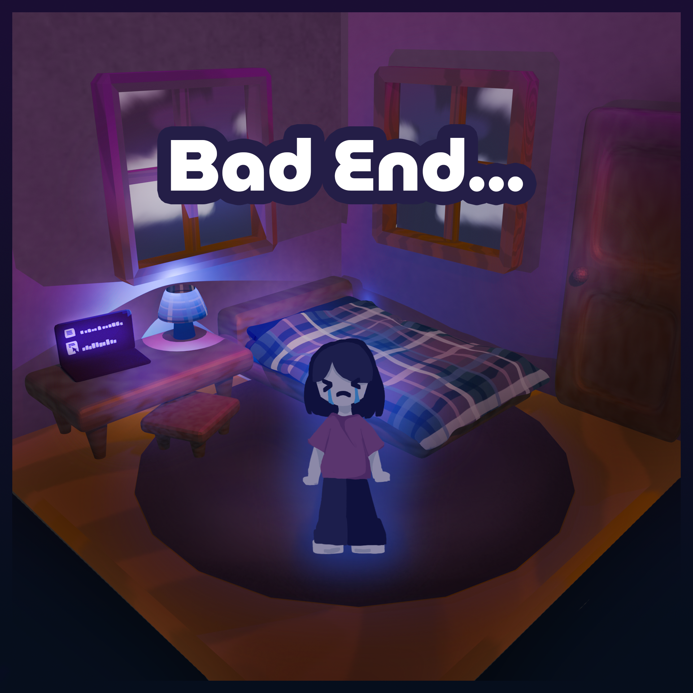

Oh no! The protagonist is not prepared for her exams at all, and she her academic performance was terrible! She is regretting her decision
to relax instead of studying, and she is wishing that she had made a different choice. The protagonist is now feeling very depressed about her
results, and she can't stop worrying about her overall grades. She can't seem to enjoy her freedom after the bad news...
